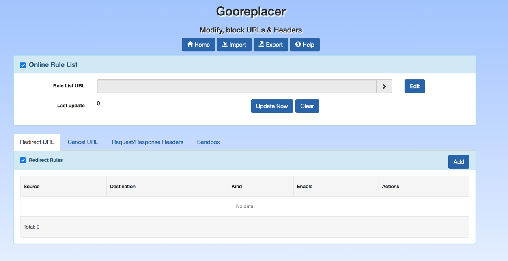

Gooreplacer is a Firefox/Chrome extension.
At first it's created for redirecting Google Ajax/Api/Themes to other CDN to bypass Great Firewall since pages referring those are slow as molasses.
For now, more features have been added to it, mainly:
- Block url
- Modify Headers
- Test user-defined rule
- A new UI built with ClojureScript + Reagent ❤️
I think gooreplacer stands out from other similar extensions for ease-of-use. Why not give it a try?
Downloads
Support
You can find more guides in Github README.
And if you have any questions or suggestions, welcome to open a issue or file me an email. Thank you for your time.